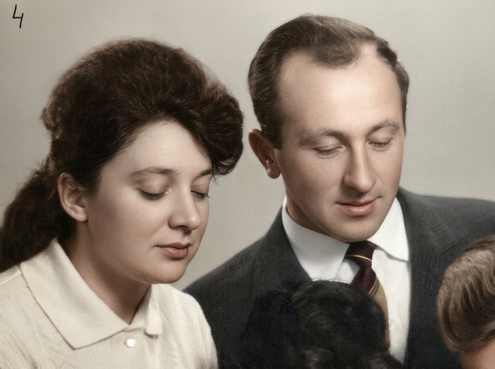
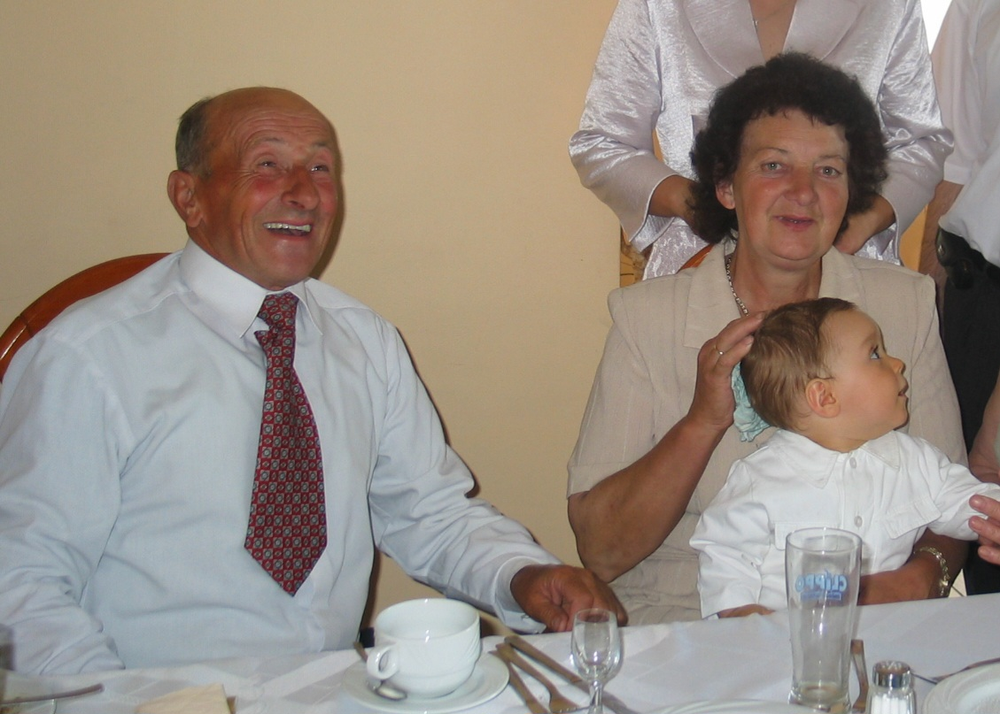
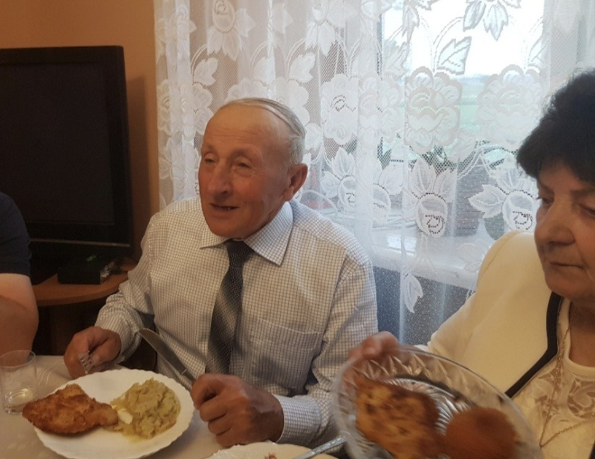
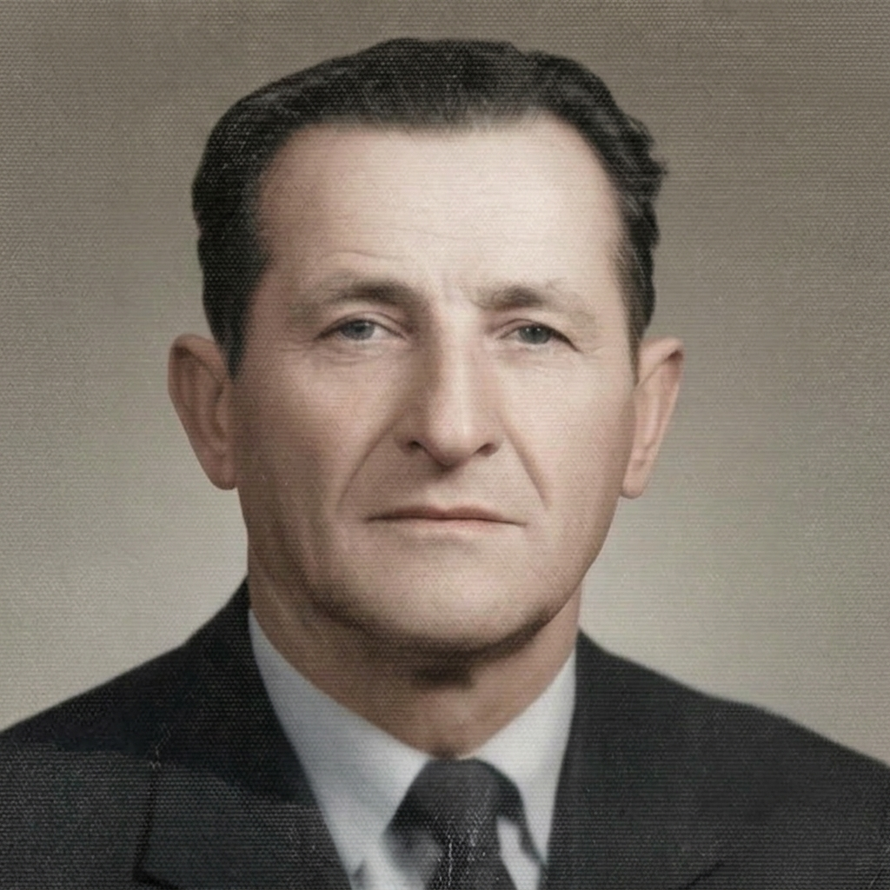
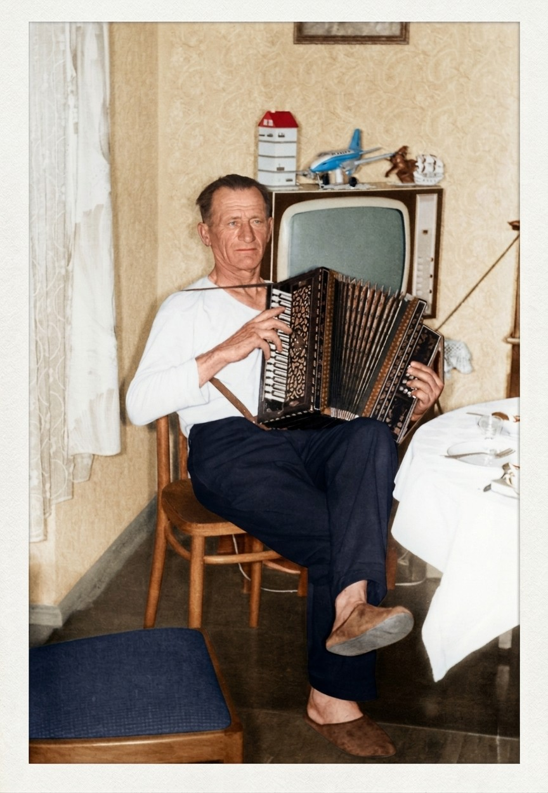
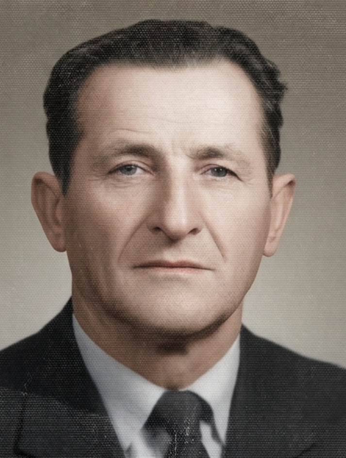

Pamięci Kochającego Męża, Taty, Dziadka i Pradziadka
Żył lat 87
Zmarł 10 listopada 2022 r.
„Nie umiera ten, kto trwa w sercach i pamięci żywych.”
Wspomnienie
Pamiętamy Cię, Jurku, Tato, Dziadku, jako osobę czułą, pełną życia i optymizmu. Lubiłeś zawsze wiosnę, kipiący
zielenią i kwiatami maj, wiosenne śpiewy przy kapliczce. Kochałeś muzykę, śpiew i taniec, ceniłeś towarzystwo rodziny i znajomych.
Galeria zdjęć



Śp. Wojciech Borowczyk
Pamięci Kochającego Taty, Dziadka i Pradziadka

Żył lat 84
Zmarł 13 kwietnia 1991 r.
„Na zawsze pozostaniesz w naszych sercach.”
Wspomnienie
Pamiętamy Cię Tato, Dziadku jako osobę pełną energii i optymizmu. Uwielbiałeś grać na swojej dwurzędowej harmonii i prawie
podczas każdego spotkania z rodziną i znajomymi wyjmowałeś ją z szafy i zmieniałeś świat na weselszy i piękniejszy.
Galeria zdjęć


Śp. Aniela Borowczyk
Pamięci Kochającej Mamy i Babci
Żyła lat 66
Zmarła 30 grudnia 1973 r.
„Na zawsze pozostaniesz w naszych sercach.”
Wspomnienie
Pamiętamy Cię Mamo, Babciu jako osobę troskliwą i opiekuńczą, kochającą rodzinę. Uwielbiałaś śpiewać różne piosenki i pieśni.